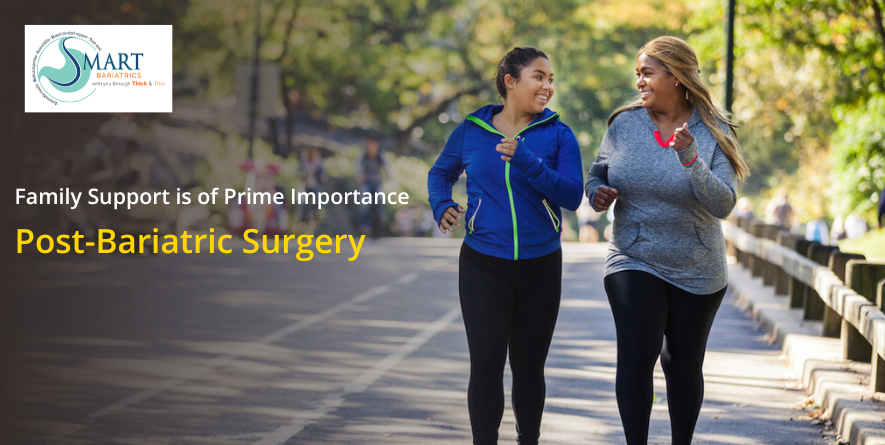

Supporting a Loved One Post-Bariatric Surgery: A Guide to Encouragement and Care
The journey of Bariatric surgery from start to end can be a long and arduous one, but it is worth all the effort. Sometimes, our loved ones can be discouraging or hypercritical about weight loss surgery, or else, they may say that it is a shortcut to weight loss because they think weight loss is assured post-bariatric surgery. They may overstress about possible complications because of a stray incident that they heard from someone. Bariatric candidate needs all the confidence and support to help them get to where they desire to be.
There are many things you can do to help your loved ones feel supported, here are a few suggestions:
- Show interest in knowing more about Bariatric surgery. The more you know about the surgery and the lifestyle changes needed post-surgery, the more helpful you can be. You can assist them when planning their aftercare, meals, workout routines, etc. You should offer to go along with them for their follow-up with the doctor and the dietician.
- Your loved one should not feel as if you are “judging or criticizing” them because they have chosen to get the bariatric surgery done. They are taking this big decision knowing all the risks involved so, respect their choice.
- They should not feel like they are the only one who has to eat in a particular way and the one making healthy choices which is not easy for them. It is very difficult when trying to make healthier food choices and the people around you are eating extremely appetizing food that smells good. Some people can’t resist food and may not want to see others eat in front of them. So, if the food is out of sight, it will be out of mind.
- Apart from supporting them emotionally, you could also support them in preparing their meals and doing grocery shopping. You may also give them a commitment in joining them during their exercise regime or other fun activities.
- Be careful what you say after surgery; avoid making comments about weight post-bariatric surgery. Also, sometimes friends and family members start acting like the “food police”. They observe and find fault in eating habits because they want to be of help. Try avoiding this, instead motivate the person and recommend them other healthy options or activities.
Doing things together as a family is a great way to bond, stay motivated, and also have fun. Look forward together!
Back to Blog